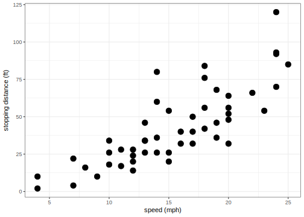

5 Measurements and Data Types
Now that we have our tools ready, let’s start doing some analysis. First, let’s go over some principles of R as a data analysis environment. R is a computational environment for data analysis. It is designed around a functional language, as opposed to procedural languages like Java or C, that has desirable properties for the type of operations and workflows that are frequently performed in the course of analyzing datasets. In this exercise we will start learning some of those desirable properties while performing an analysis of a real dataset.
5.1 A data analysis to get us going
I’m going to do an analysis of Baltimore crime to guide our discussion of R. We’ll use data downloaded from Baltimore City’s awesome open data site (this was downloaded a couple of years ago so if you download now, you will get different results).
The repository for this particular data is here. https://data.baltimorecity.gov/Crime/BPD-Arrests/3i3v-ibrt
5.2 Getting data
We’ve prepared the data previously into a comma-separated value file (.csv file): each line contains attribute values (separated by commas) describing arrests in the City of Baltimore. The read_csv command is part of the readr R package and allows you to read a dataset stored in a csv file. This function is extremely versatile, and you can read more about it by using the standard help system in R: ?read_csv. The result of running calling this function is the data itself, so, by running the function in the console, the result of the function is printed.
To make use of this dataset we want to assign the result of calling read_csv (i.e., the dataset) to a variable:
library(tidyverse)
arrest_tab <- read_csv("data/BPD_Arrests.csv")
arrest_tab## # A tibble: 104,528 x 15
## arrest age race sex arrestDate arrestTime arrestLocation
## <int> <int> <chr> <chr> <chr> <time> <chr>
## 1 11126858 23 B M 01/01/2011 00'00" <NA>
## 2 11127013 37 B M 01/01/2011 01'00" 2000 Wilkens Ave
## 3 11126887 46 B M 01/01/2011 01'00" 2800 Mayfield Ave
## 4 11126873 50 B M 01/01/2011 04'00" 2100 Ashburton St
## 5 11126968 33 B M 01/01/2011 05'00" 4000 Wilsby Ave
## 6 11127041 41 B M 01/01/2011 05'00" 2900 Spellman Rd
## 7 11126932 29 B M 01/01/2011 05'00" 800 N Monroe St
## 8 11126940 20 W M 01/01/2011 05'00" 5200 Moravia Rd
## 9 11127051 24 B M 01/01/2011 07'00" 2400 Gainsdbourgh Ct
## 10 11127018 53 B M 01/01/2011 15'00" 3300 Woodland Ave
## # ... with 104,518 more rows, and 8 more variables: incidentOffense <chr>,
## # incidentLocation <chr>, charge <chr>, chargeDescription <chr>,
## # district <chr>, post <int>, neighborhood <chr>, `Location 1` <chr>Now we can ask what type of value is stored in the arrest_tab variable:
class(arrest_tab)## [1] "tbl_df" "tbl" "data.frame"The data.frame is a workhorse data structure in R. It encapsulates the idea of entities (in rows) and attribute values (in columns). We call these rectangular datasets. The other types tbl_df and tbl are added by tidyverse for improved functionality.
We can ask other features of this dataset:
# This is a comment in R, by the way
# How many rows (entities) does this dataset contain?
nrow(arrest_tab)## [1] 104528# How many columns (attributes)?
ncol(arrest_tab)## [1] 15# What are the names of those columns?
colnames(arrest_tab)## [1] "arrest" "age" "race"
## [4] "sex" "arrestDate" "arrestTime"
## [7] "arrestLocation" "incidentOffense" "incidentLocation"
## [10] "charge" "chargeDescription" "district"
## [13] "post" "neighborhood" "Location 1"Now, in Rstudio you can view the data frame using View(arrest_tab).
5.2.1 Names, values and functions
Let’s review the concepts of names values and functions again. In the console, we’ve now written a few instructions, e.g. View(arrest_tab). Let’s take a closer look at how these instructions are put together.
expressions: first of all, we call these instructions expressions, which are just text that R can evaluate into a value. View(arrest_tab) is an expression.
values: so, what’s a value? They are numbers, strings, data frames, etc. This is the data we will be working with. The number 2 is a value. So is the string "Hector".
So, what value is produced when R evaluates the expression View(arrest_tab)? Nothing, which we also treat as a value. That wasn’t very interesting, but it does have a side effect: it shows the arrest_tab dataset in the Data viewer.
How about a simpler expression: arrest_tab, what value is produced when R evaluates the expression arrest_tab? The data.frame containing that data. Try it out in the console.
names: so if arrest_tab isn’t a value, what is it? It is a name. We use these to refer to values. So, when we write the expression arrest_tab, we tell R we want the value referenced by the name arrest_tab, that is, the data itself!

functions: Besides numbers, strings, data frames, etc. another important type of value is the function. Functions are a series of instructions that take some input value and produce a different value. The name View refers to the function that takes a data frame as input, and displays it in the Data viewer. Functions are called using the parentheses we saw before: View(arrest_tab), the parentheses say that you are passing input arrest_tab to the function View. We’ll see later how we can write our own functions.
5.3 Entities and attributes
As a reminder, we are using the term entities to refer to the objects to which data in a dataset refers to. For instance, in our example dataset, each arrest is an entity. In a rectangular dataset (a data frame) this corresponds to rows in a table. We then say that a dataset contains attributes for each entity. For instance, attributes of each arrest would be the person’s age, the type of offense, the location, etc. In a rectangular dataset, this corresponds to the columns in a table.
This language of entities and attributes is commonly used in the database literature. In statistics you may see experimental units or samples for entities and covariates for attributes. In other instances observations for entities and variables for attributes. In Machine Learning you may see example for entities and features for attributes. For the most part, all of these are exchangable. This table summarizes the terminology:
| Field | Entities | Attributes |
|---|---|---|
| Databases | Entities | Attributes |
| Machine Learning | Examples | Features |
| Statistics | Observations/Samples | Variables/Covariates |
This chapter is concerned with the types of data we may encounter as attributes in data analyses.
5.4 Categorical attributes
A categorical attribute for a given entity can take only one of a finite set of examples. For example, the sex variable can only have value M, F, or `` (we’ll talk about missing data later in the semester).
table(arrest_tab$sex)##
## F M
## 19431 85095The result of a coin flip is categorical: heads or tails. The outcome of rolling an 8-sided die is categorical: one, two, …, eight. Can you think of other examples?
Categorical data may be unordered or ordered. In our example dataset all categorical data is unordered, e.g., sex, race, etc. Examples of ordered categorical data are grades in a class, Likert scale categories, e.g., strongly agree, agree, neutral, disagree, strongly disagree, etc.
5.4.1 Factors in R
We said that R is designed for data analysis. My favorite example of how that manifests itself is the factor datatype. If you look at your dataset now, arrest_tab$sex is a vector of strings:
class(arrest_tab$sex)## [1] "character"summary(arrest_tab$sex)## Length Class Mode
## 104528 character characterHowever, as a measurement, or attribute, it should only take one of two values (or three depending on how you record missing, unknown or unspecified). So, in R, that categorical data type is called a factor. Notice what the summary function does after turning the sex attribute into a factor:
arrest_tab$sex <- factor(arrest_tab$sex)
summary(arrest_tab$sex)## F M NA's
## 19431 85095 2This distinction shows up in many other places where functions have different behavior when called on different types of values. The possible values a factor can take are called levels:
levels(arrest_tab$sex)## [1] "F" "M"Exercise: you should transform the race attribute into a factor as well. How many levels does it have?
5.5 Discrete numeric attributes
These are attributes that can take specific values from elements of ordered, discrete (possibly infinite) sets. The most common set in this case would be the non-negative positive integers. This data is commonly the result of counting processes. In our example dataset, age, measured in years, is a discrete attribute.
Frequently, we obtain datasets as the result of summarizing, or aggregating other underlying data. In our case, we could construct a new dataset containing the number of arrests per neighborhood (we will see how to do this later)
## # A tibble: 6 x 2
## neighborhood number_of_arrests
## <chr> <int>
## 1 Abell 62
## 2 Allendale 297
## 3 Arcadia 78
## 4 Arlington 694
## 5 Armistead Gardens 153
## 6 Ashburton 78In this new dataset, the entities are each neighborhood, the number_of_arrests attribute is a discrete numeric attribute.
Other examples: the number of students in a class is discrete, the number of friends for a specific Facebook user. Can you think of other examples?
Distinctions between ordered categorical and discrete numerical data is that ordered categorical data do not have magnitude. For instance, is an ‘A’ in a class twice as good as a ‘C’? Is a ‘C’ twice as good as a ‘D’? Not necessarily. Grades don’t have an inherent magnitude. However, if we encode grades as ‘F=0,D=1,C=2,B=3,A=4’, etc. they do have magnitude. In that case, an ‘A’ is twice as good as a ‘C’, and a ‘C’ is twice as good as a ‘D’. So in summary, if ordered data has magnitude, then discrete numeric if not, ordered categorical.
5.6 Continuous numeric data
These are attributes that can take any value in a continuous set. For example, a person’s height, in say inches, can take any number (within the range of human heights). Here is another dataset we can use to look at this datatype. In this case, entities are cars and we look at continuous numeric attributes speed and stopping distance:

The distinction between continuous and discrete is a bit tricky since measurements that have finite precision are, in a sense, discrete. Remember, however, that continuity is not a property of the specific dataset you have in hand, but rather of the process you are measuring. The number of arrests in a neighborhood cannot, in principle, be fractional, regardless of the precision at which we measure this. If we had the appropriate tool, we could measure a person’s height with infinite precision. This distinction is very important when we build statistical models of datasets for analysis. For now, think of discrete data as the result of counting, and continuous data the result of some physical measurement.
5.7 Other examples
Consider a dataset of images like the super-famous MNIST dataset of handwritten digits. This dataset contains images of handwritten digits. So each image is an entity. Each image has a label attribute which states which of the digits 0,1,…9 is represented by the image. What type of data is this (categorical, continuous numeric, or discrete numeric)?
Now, each image is represented by grayscale values in a 28x28 grid. That’s 784 attributes, one for each square in the grid, containing a grayscale value. Now what type of data are these other 784 attributes?
5.8 Other important datatypes
The three datatypes we saw above encompass a fairly large swath of data you will come across. Our arrest dataset contains other important datatypes that we will run across frequently:
- Text: Arbitrary strings that do not encode a categorical attribute.
- Datetime: Date and time of some event or observation (e.g.,
arrestDate,arrestTime)
- Geolocation: Latitude and Longitude of some event or observation (e.g.,
Location.)
5.9 Units
Something that we tend to forget but is extremely important for the modeling and interpretation of data is that attributes are for the most part measurements and that they have units. For example, age of a person can be measured in different units: years, months, etc. These can be converted to one another, but nonetheless in a given dataset, that attribute or measurement will be recorded in some specific units. Similar arguments go for distances and times, for example. In other cases, we may have unitless measurements (we will see later an example of this when we do dimensionality reduction). In these cases, it is worth thinking about why your measurements are unit-less.
When performing analyses that try to summarize the effect of some measurement or attribute on another, units matter a lot! We will see the importance of this in our regression section. For now, make sure you make a mental note of units for each measurement you come across. This will force you to think about where and how your data was obtained, which will become very important when modeling and interpreting the results of these models.